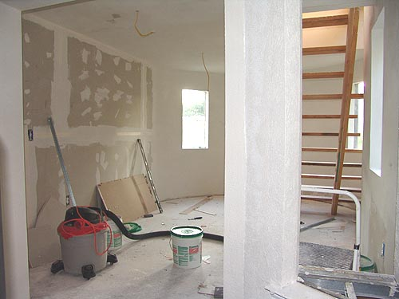
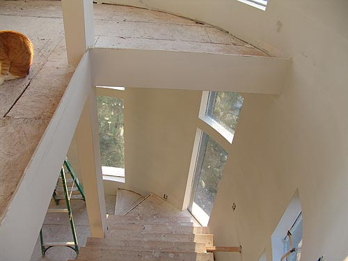
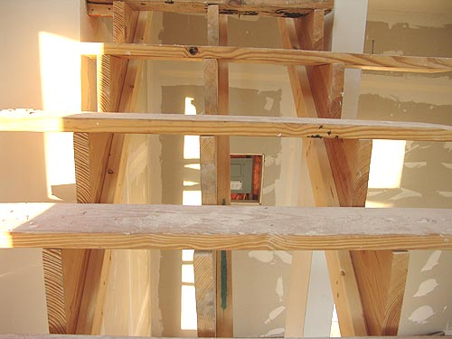
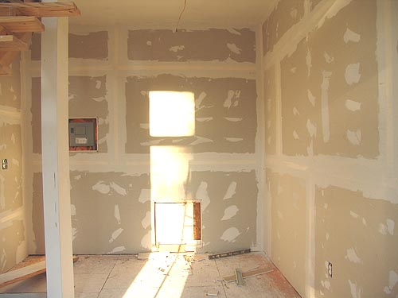
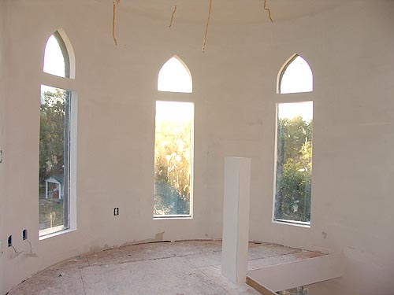
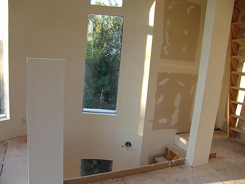
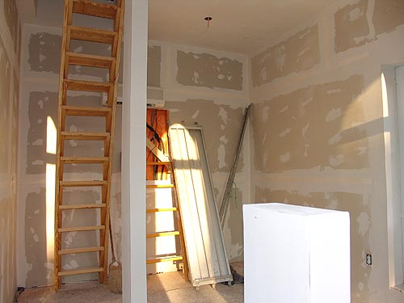
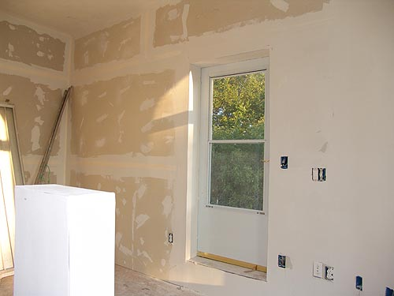

Yes, it's a mess. But here's what
it looks like looking from the living room/kitchen out into the tower.

Difficult to tell, but there are pass
throughs on the left and right (still need to put in a sill where you can
see the metal studs). That allows a lot more light in, but leaves the structural
support between the tower and house alone.

Looking down from the 3rd floor. Still
need flooring and the last thing will be the finished stair treads. Such
a pretty smooth curved wall.

On the inside of each stringer
we added a long 2X4 to strengthen the stairs. They don't move at all when
we go up and down them now.
The plan is to paint or stain, but leave
them open.

The back wall of the 2nd floor has
the breaker box and access to the old attic. Strong light in the morning,
so we're going to have to starting thinking about curtains.
We also have to decide if we're doing
color or what with all the walls.

Third floor arches done and smooth.
Once we paint we can think of what to do for the lighting in the ceiling.

We have to decide on banisters for
the stairwells.

We rotated the stairs to the roof.
They seem a bit more out of the way this way. The hole in the back wall
is the access panel for the air conditioner. It's been working great. We'll
probably just cut a piece of sheetrock to fit and screw it in place and
leave the screws exposed.

We wanted to use old world texture
(thick and rough). The problem is the smooth texture is so nice. We'll
have some discussions before we decide.